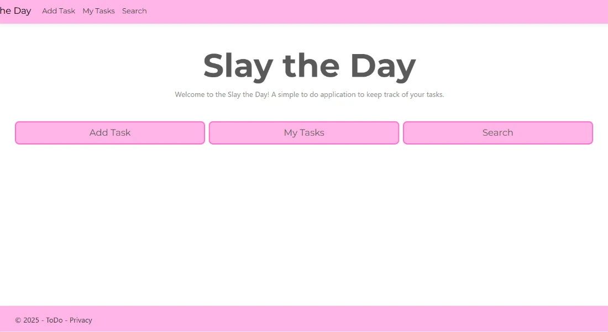
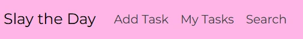
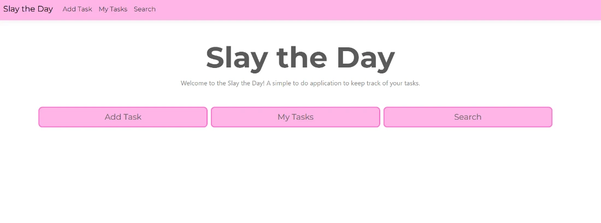
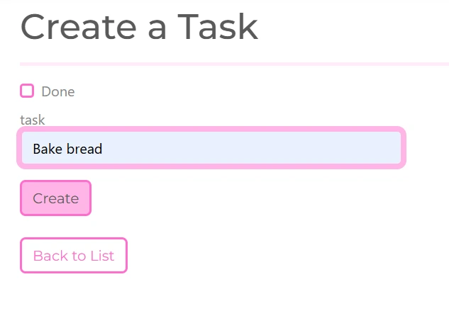
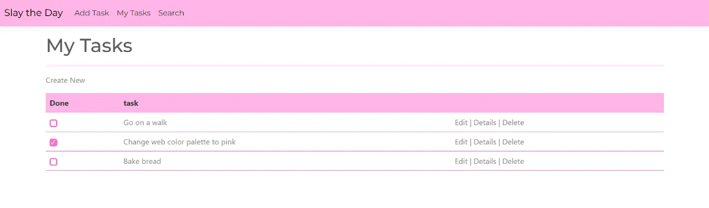
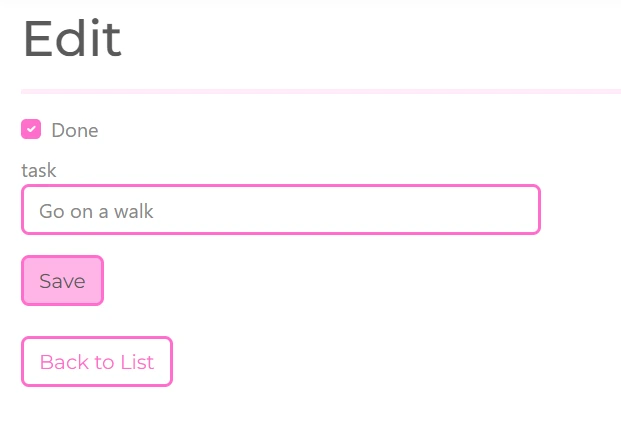
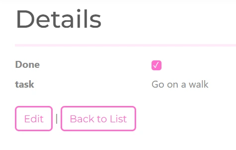
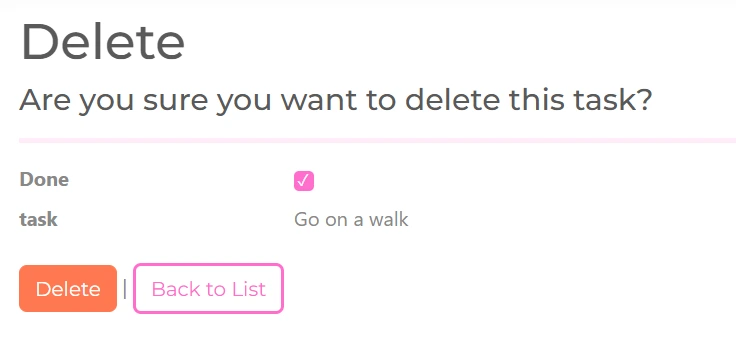
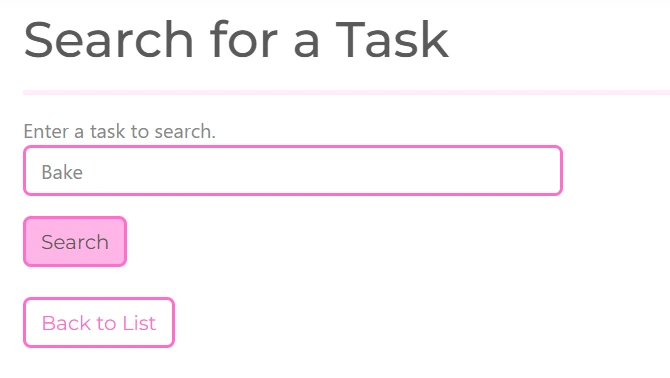
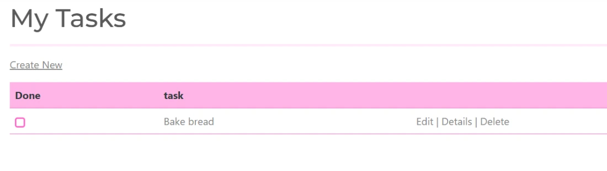

Slay the Day
To do web application.I created this web application because I couldn't find one that meets all my needs while also having my preferred aesthetic. The source code can be found on my GitHub

Introduction
To do web application built with ASP.NET Core MVC, C#, Entity Framework Core, and PostgreSQL. The name "Slay the Day" is meant to be encouraging, motivating the users to conquer the day!
Showcase of functionality
Navbar
All pages also include quick access navigation bar. You can navigate to the home page by clicking "Slay the Day", or go to "Add Task", see "My Tasks", and "Search" for a specific task.

Main page
This page has buttons for quick access to "Add task", see "My Tasks", and "Search" for a specific task.

Add task
You can add tasks on this page. Here you also configure the details of your task, such as whether it's done and its name.

See your tasks
All tasks are listed on this page in a table. You can see their completion status, name, and quick actions for each task, which includes editing, seeing the details or deleting the task.

Edit tasks
If you want to edit the task, for example marking it complete, you can do it here. You can also change the task's name.

Details
See the complete information about the task. On this page you can also navigate to the edit page for the task.

Delete a task
If you don't want the task to be shown in the tasks list anymore, you can delete it here.

Search tasks
Here you can search your tasks by their name.


Future
Add more parameters to the tasks:
- Priority
- Low, Moderate, High, Urgent
- Add the priority for each task,
- Task due date
- Add the date by which the task is supposed to be completed.
- Tags (with different colors)
- Add tags to the task, that describe the category it belongs to. For example work/housework.
- Task states
- To do, Doing (progress values, trackers), and Done
- Add whether the task is only supposed to be done in the future, is currently being handled or is already done.
- Subtasks
- If one task requires multiple smaller subtasks to be completed, add them here.
Views of tasks:
After adding more parameters to the tasks, they can be used for interesting visualisation.
- Additions to list view
- Priority: Sort the tasks according to highest or lowest priority.
- Tags: Make sections based on tags that are assigned to the tasks.
- Calendar
- See a calendar view where your tasks are displayed. Also displays due dates for tasks.
- Kanban
- Several columns for To do, Doing, and Done tasks.
- Tree
- See how subtasks are connected to the main task.